Over the past year, I've worked on a number of game-related projects both as a part of my education and as a hobby. My standard for what is "portfolio-worthy" is constantly increasing as I learn more and develop my skills, but as of right now I consider the projects below worth being proud of.
Here is an index of the projects on this page:
Last spring, I worked on two projects with members of Georgia Tech's Video Game Dev Club (VGDev). BeatDown is a 2D, rhythm-based singleplayer and party game in which players (and AI in the singleplayer mode) control shapes on a board, moving to the beat and crashing into other shapes to destroy them.
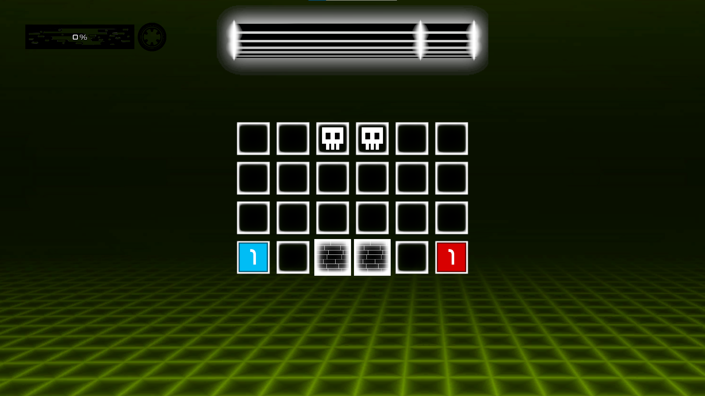The image above shows off the game's appearance. Each player or AI controls a shape - either a Square, Triangle, or Circle. Each shape brings a unique Ultimate to the table with which to destroy your enemies.
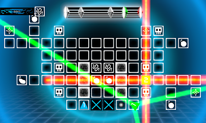Above you can see the ultimates in use (Hint: they're the giant, over-the-top light beams.)
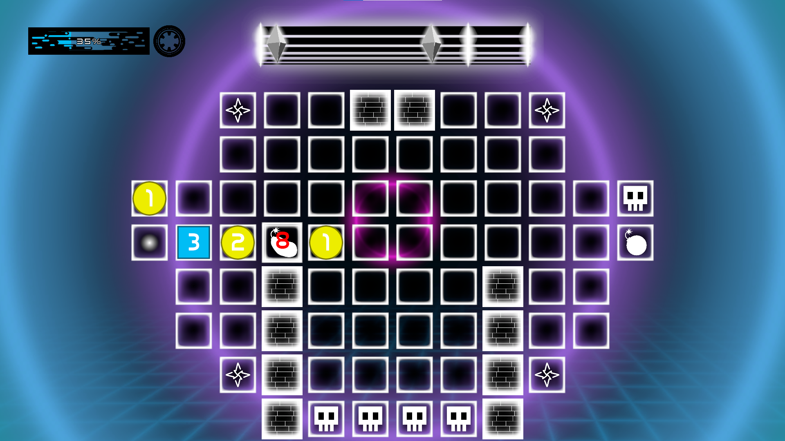The chaos wouldn't be complete, however, without the Powerups. I was in charge of implementing all of the Powerups and played a hand in designing them as well. The Potato Bomb (pictured above between the two yellow circles) was my personal favorite invention: it moves around and can be pushed by players, eventually exploding when their fuse expires and destroying anyone nearby.
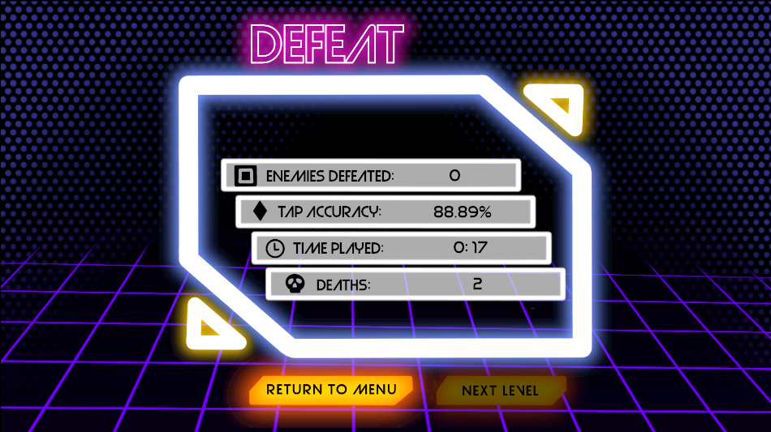
In addition to my work on Powerups and general issue-tackling, I played a part in implementing control rebinding, player preferences such as volume, and the end-screen UI - with the last task in particular being far more time consuming and stress-inducing than I had imagined.
Video Demo
Itch.io Page
The other project I worked on in VGDev was the casual 3D game Dog Days in which the player controls two dogs to explore, complete small quests, and relax in a calming world.
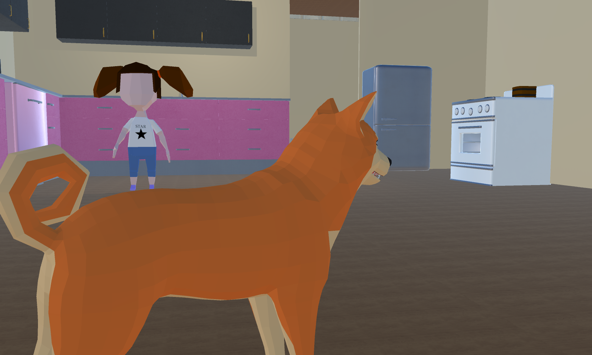Players alternate between controlling each dog to solve problems. They speak to NPCs (both human and dog alike) to receive and complete quests.
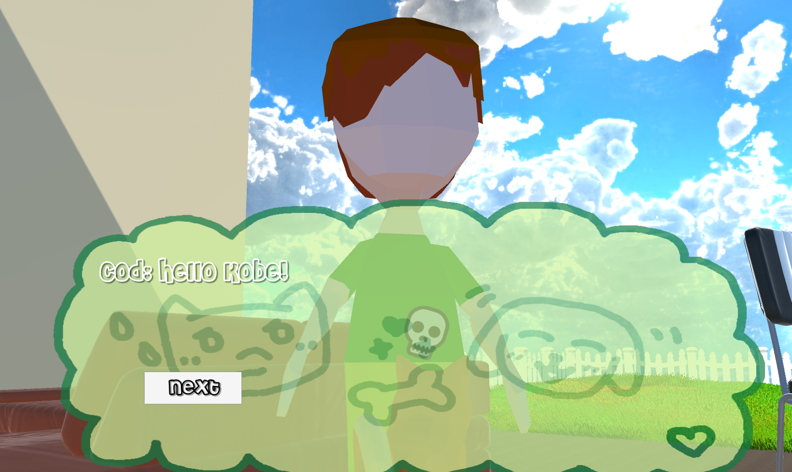One of my major focuses on the project was creating a system for creating Player-NPC dialogue using XML. The system allowed defining chains of dialogue with response choices, conditions for responses to be available, and events which triggered upon selecting a particular dialogue option.
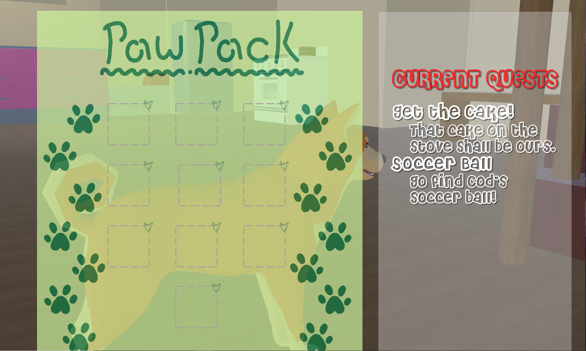I also played a large part in creating the quest tracking system for the game and offered some design input on some of the quests which appear. I also created the framework for the player's inventory, including functionality such as picking up items, displaying the items in the inventory menu, and testing if the player has certain items to unlock dialogue options with NPCs or trigger events.
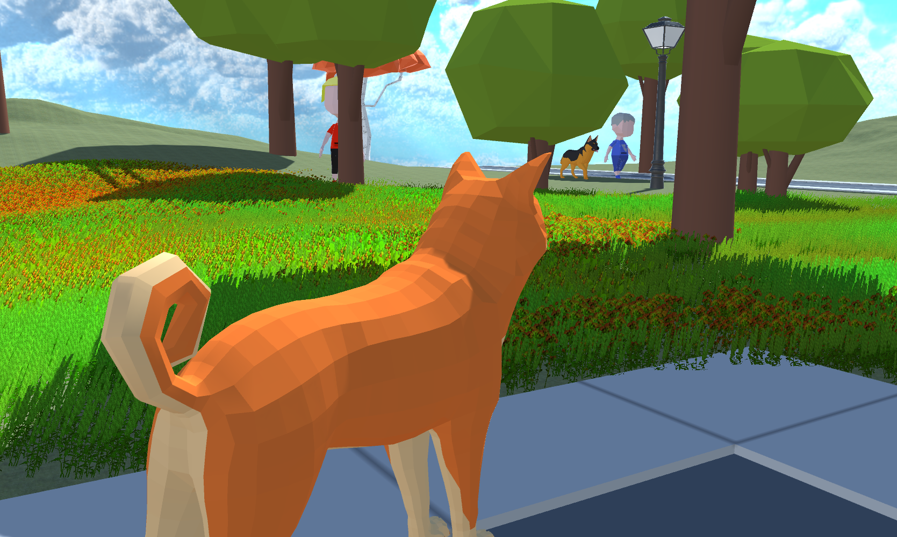For the Southern Student Summer Jam in 2021, I worked alongside two others to create a 2D platformer game called Light Of My Life in 1 week. The jam theme was "Transmission" and we choose to base our game around a firefly who finds light messages from his family to find them after he gets left behind.
The game features two levels, each of which introduces a new power for the player to use. The first level (pictured above) uses Unity's 2D lightning system and sprite masking to create a dark atmosphere and a mechanic of limited vision. Players light lanterns to light up the area, unlock doors, and reveal new platforms to use.
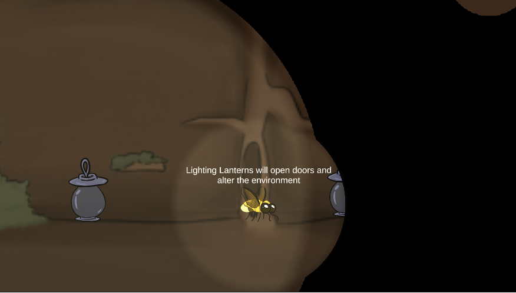The second level is far larger and introduces launch pads which launch the player in a set direction. It also brings the Dash ability which enables players to dash a short distance horizontally. By combining this ability with the launch pads, players can fly through the air to reach far off areas.
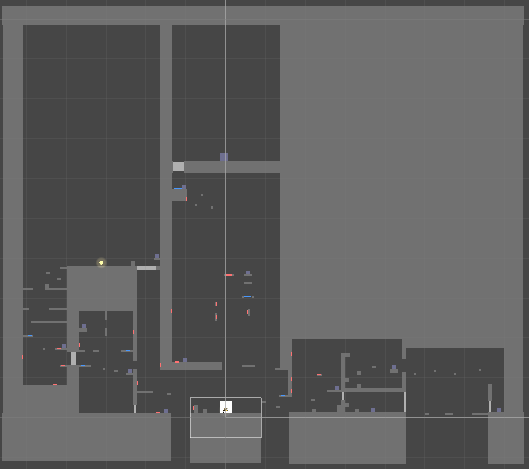The above screenshot of the level before we put in art assets shows the overall flow: players first move to the left, using launch pads to climb up vertically. They then receive Dash which enables them to travel to the right and use it to solve that area, unlocking the way up the tree. They then combine both launch pads and dash in a final test of their abilities to reach the top and complete the game.
I worked as the sole programmer and sole level designer on the project and played a large part in deciding the narrative, player abilities, and overall gameplay feel.
Itch.io Page
I also participated in the Summer 2021 VGDev Jam at Georgia Tech. The theme of the jam was "All Around You" which inspired us to create a 2D puzzle game in which players use magical jams to reveal environment pieces such as walls and buttons.

I came up with the core idea for the puzzles: the player picks up jam from jars (which come in 3 different flavors) and can consume the jam to gain temporary enhanced vision which reveals things in the world. This can reveal buttons which players can activate to unlock gates of the same color or can reveal walls to impede their progress.
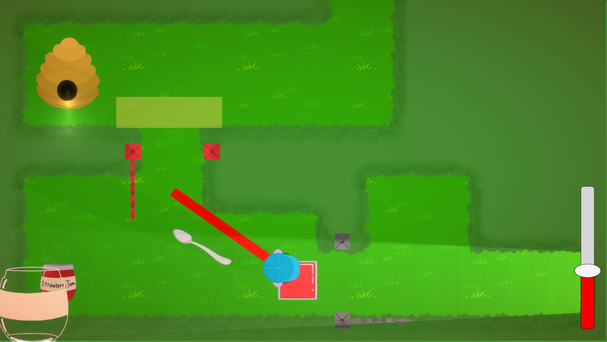The game also features a system in which the player moves a spoon into the jam jar on the bottom left, moves it up and down to "scoop up" jam, and then moves it into the player to "eat" it.
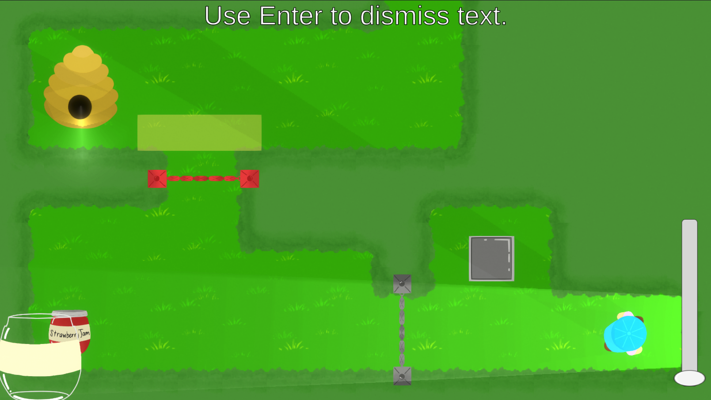After the 72 hour jam period, I returned to the game to add some polish. Namely, I added several features aimed at increasing user-friendliness such as a meter displaying the remaining time (and current color) of the player's enhanced vision, an (ugly but functional) raycast showing which gate the button the player pressed activated, and equally ugly yet functional zones to display where the bees will grab the players held jam should the player move inside.

Over the course of this project, I learned quite a lot about the importance (and difficulty) of conveying information to players properly. This was also my first time working on a true puzzle game, so I quickly learned which mechanics work and enable interesting level design and which ones simply don't.
Itch.io Page